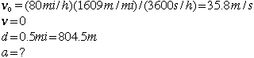

Two Train Relative VelocityThe engineer on a 100 mi/h fast train suddenly becomes aware that a slower train traveling 20 mi/h has pulled out on the main line. At this point a distance of 1/2 mile separates them. With what deceleration must the engineer brake to avoid a collision? Solution: The amount of computation required to solve a motion problem often depends strongly on the coordinate system chosen. In this case it is most efficient to choose a coordinate system riding with the slower train and work with the relative velocities of the two trains. Stated in terms of this coordinate system, the challenge is to reach a zero relative velocity when the separation distance decreases to zero. This allows you to calculate the minimum deceleraton to avoid a collision. In this coordinate system the motion parameters involved in the problem are 
|
Index Motion with constant acceleration | |||||
| HyperPhysics***** Mechanics | Go Back |